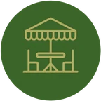
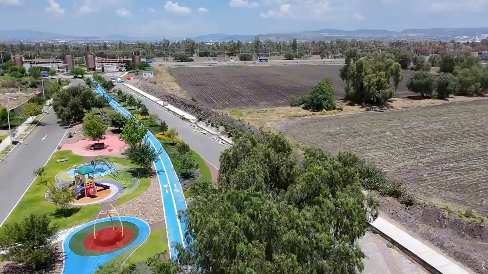
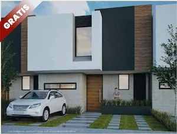
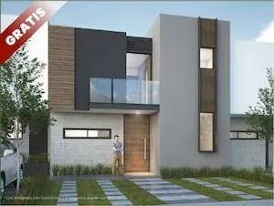
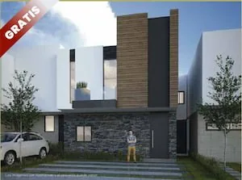
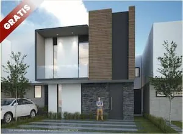
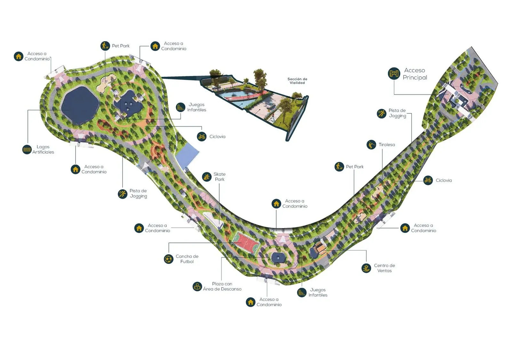

La Marquesa · Privada Club
- Crédito directo hasta 10 años
- Sin revisión de buró ni comprobación de ingresos
Un desarrollo ecológico y residencial con casa club, sendero deportivo y más de 25 amenidades, a sólo 3 km del Centro de Querétaro.
El desarrollo
Aquí, donde se funde el señorío del pasado con la modernidad y el confort del presente.
Un desarrollo inmobiliario ecológico, residencial y comercial concebido y diseñado con creatividad al más alto nivel de excelencia e innovación, en respuesta a los imperativos que nos marca la vida moderna.
Elige tu terreno en una de nuestras tres privadas y disfruta de casa club, alberca tipo resort, cancha de pádel, gimnasio y un sendero deportivo que recorre todo el desarrollo.
Vive en comunidad
Más de 25 amenidades pensadas para el deporte, el descanso y la convivencia en familia.

Terraza fitnessGalería
Casa club
Jardines, palmeras y andadores de piedra que te llevan de la alberca a la cancha de pádel.
La casa club es el corazón de Los Senderos Residencial: alberca tipo resort con chapoteadero, asoleadero, cancha de pádel, gimnasio, terraza fitness y amplias áreas verdes para disfrutar en familia, a unos pasos de tu terreno.
Conócelo sin salir de casa

Querétaro, corazón del progreso de México
Querétaro se ha consolidado como un destino clave para la inversión en México gracias a su ubicación estratégica, infraestructura de primer nivel y un crecimiento económico superior al promedio nacional.
Gratis con tu terreno
En la compra de tu terreno puedes elegir uno de nuestros 4 proyectos arquitectónicos.




Masterplan
Un circuito arbolado con ciclovía y andador recorre el desarrollo y conecta las privadas con la casa club, los juegos infantiles, las áreas verdes y los espacios para hacer ejercicio al aire libre.
Ver mapa completo
Lotes residenciales en Querétaro
Consulta la disponibilidad de terrenos en cada privada. Precios desde $1.1 MDP*.
*Precios desde $1.1 MDP, sujetos a disponibilidad. Consulta condiciones con un asesor.
Cotizador
Elige la privada y la forma de pago para ver el precio de lista de un lote tipo de 8 × 18 m.
3 Lote tipo
La Marquesa Privada Club · Contado
Precio de lista
$1,107,144
$7,688 por m² · lote de 144 m²
Un asesor te responde con disponibilidad y descuentos vigentes.
Precios de lista al 27 de octubre de 2026, sin descuentos ni promociones. Sujetos a cambio y disponibilidad. Un asesor te confirmará el precio final y los descuentos vigentes.
Tu nuevo estilo de vida
Agenda un recorrido por la casa club, el sendero deportivo y los terrenos disponibles en cada privada.
Resolvemos tus dudas
Los Senderos Residencial se encuentra sobre Av. Tlacote, en Santiago de Querétaro, a sólo 3 km del Centro de Querétaro.
Más de 25 amenidades: alberca tipo resort, chapoteadero, asoleadero, cancha de pádel, gimnasio, terraza fitness, health & wellness center, salón de eventos, cocina bar, zona grill, juegos infantiles, áreas verdes, baños con vestidores, oficinas administrativas y un sendero deportivo que recorre el desarrollo.
Los terrenos en las privadas La Marquesa, Santiago y Antigua están disponibles desde $1.1 MDP. Hay promociones vigentes, crédito directo hasta 10 años en La Marquesa y crédito Infonavit en Santiago y Antigua. Contáctanos para conocer la disponibilidad y el precio actual.
El valor de un terreno depende principalmente de su ubicación, el acceso a servicios como agua, luz y caminos, y los permisos de uso de suelo. Si está en una zona con alta demanda o crecimiento, su valor aumenta. Además, un terreno bien ubicado cerca de áreas comerciales o escuelas suele ser más valioso.
El costo por metro cuadrado en Querétaro varía según la ubicación, la infraestructura cercana y la demanda de la zona. En áreas céntricas o de alto crecimiento el precio tiende a ser más elevado, mientras que en zonas más alejadas puede ser más accesible. Es importante investigar el mercado local y considerar estos factores para obtener una estimación precisa.